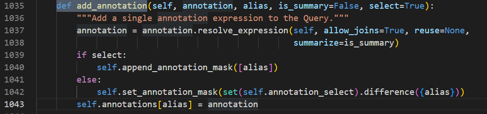
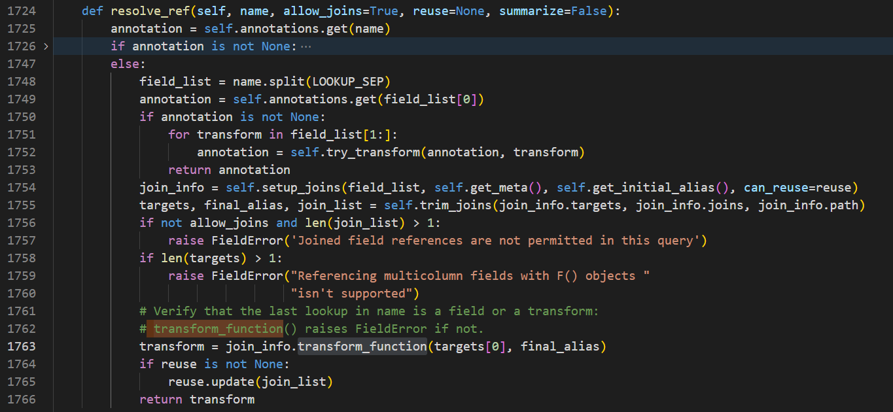
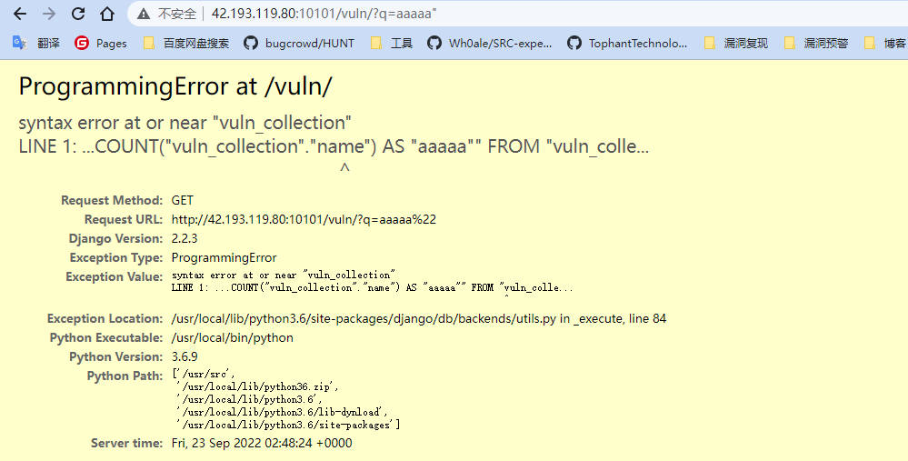
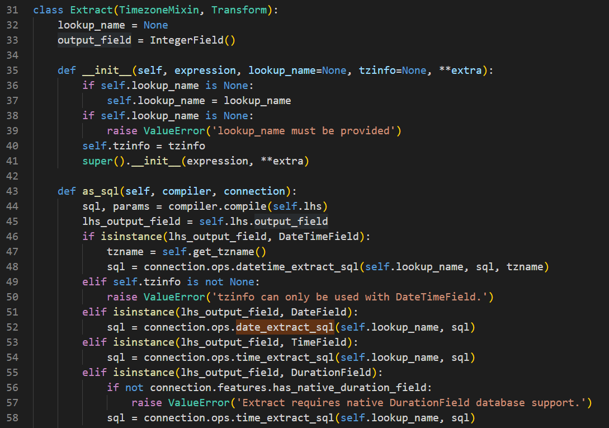
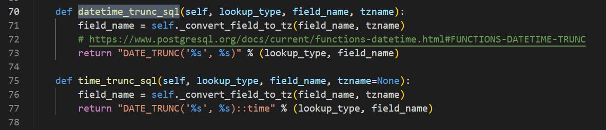
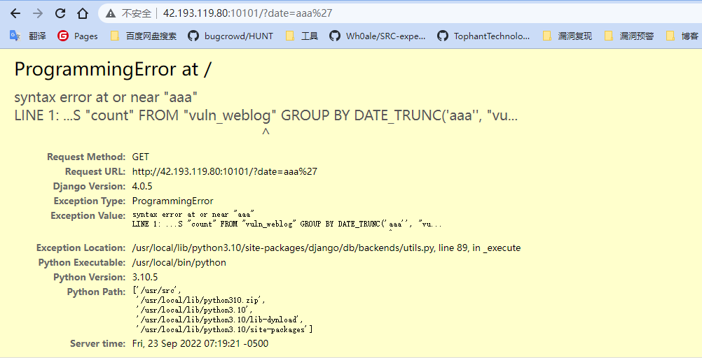

细数Django框架核心历史SQL注入漏洞（下）
本文首发于奇安信攻防社区：https://forum.butian.net/share/1962
本文仅用于技术讨论与研究，文中的实现方法切勿应用在任何违法场景。如因涉嫌违法造成的一切不良影响，本文作者概不负责。
0x00 前言
最近总结了一下 Django 框架曾经出现的 SQL 注入漏洞，总共有七个 CVE ，分别都简单分析复现并写了文章，总体来说会觉得比较有意思，在这里分享一下。本篇文章是下篇。上篇请查看：细数Django框架核心历史SQL注入漏洞（上）
0x01 目录
本篇文章分享三个 CVE ，其他四个 CVE 在上篇文章展现。
- CVE-2022-28346
- CVE-2022-28347
- CVE-2022-34265
0x02 CVE-2022-28346
漏洞描述
Django 在2022年发布的安全更新，修复了在 QuerySet 的 annotate()， aggregate()， extra() 等函数中存在的 SQL 注入漏洞。
漏洞影响
- Django 2.2.x < 2.2.28
- Django 3.2.x < 3.2.13
- Django 4.0.x < 4.0.4
需要使用了 annotate 或者 aggregate 或 extra 方法
漏洞分析
我们可以直接来到 github 修复记录

这里给 add_annotation 和 add_extra 两个函数中的参数添加了正则过滤，接下来我们就是要找到哪里使用到了这两个函数
这里其实可以通过测试用例来进行判断，我们可以看到修复记录中也存在测试用例的修复有点多，这里只选取一个进行分析

这里使用到了如下语句
1 | |
crafted_alias 是用来测试的 payload ，我们先找到 aggregate 的实现位置
最终可以找到这里 django\db\models\query.py

传进来的 args 与 kwargs会经过 _validate_values_are_expressions 处理，但没有进行过滤
之后进过 add_annotation 进行赋值，如下

这里就是修复 sql 注入的位置，对 alias 进行了过滤，而目前这里没有进行过滤，直接成为了 self.annotations 的键，之后跟进会发现这个self.annotations 在 resolve_ref 函数中被取出来

这里会将我们之前的 alias 的值最终放到 transform 中，直接被使用
其他的漏洞函数与这个类似，就不分析了。
漏洞复现
复现环境参考之前的 CVE-2020-7471 ，只需要更改 views.py
1 | |
payload 如下
1 | |

0x03 CVE-2022-28347
漏洞描述
Django 在2022年发布的安全更新，修复了在 QuerySet 的 explain()函数中存在的 SQL 注入漏洞。
漏洞影响
- Django 2.2.x < 2.2.28
- Django 3.2.x < 3.2.13
- Django 4.0.x < 4.0.4
需要使用了 explain 方法，并且参数可控
漏洞分析
我们可以直接来到 github 修复记录

这里首先做的就是对 options 的内容进行过滤，如果包含敏感的字符，那么就报错，仅仅这些还没够，还做了如下更改

这里做了一个白名单，只有在这个白名单中的字符串才可以被使用，不会直接将所有的都拼接进去
有了修复的记录，我们就很容易定位到出现问题的地方，这里 django\db\models\sql\compiler.py 是将代码变成 sql 语句，在这里有一句关于 explain 的处理

result 是一个数组，里面的字符串最后都会拼接到一起，这里调用 explain_query_prefix 进行处理 self.query.explain_options 的内容，我们这里使用 postgres 数据库，并且 postgres 对这个函数存在重写，因此这里也直接看该数据库相关的处理
django\db\backends\postgresql\operations.py

经过父类的处理后，在下面，会将options 中的每一个取出来，键直接为键，值存在就为 true ，因此值无法被更改，但是键会直接写入，最后拼接到 prefix 上去，因此这里的键存在注入。
漏洞复现
复现环境参考之前的 CVE-2022-28346 ，只需要更改 views.py
1 | |
payload 如下
1 | |

0x04 CVE-2022-34265
漏洞描述
Django 在2022年发布的安全更新，修复了在 Trunc() 和 Extract() 函数中存在的 SQL 注入漏洞。
漏洞影响
- Django 3.2.x < 3.2.14
- Django 4.0.x < 4.0.6
需要使用了 Trunc() 或 Extract() 方法，并且参数可控
漏洞分析
我们可以直接来到 github 修复记录

在这里是直接给 Extract 类或者 Trunc 类的 as_sql 方法添加了一层正则过滤。
这里我们以 Extract 为例，可以多关注被过滤的那个参数，也就是 self.lookup_name

这里我们可以进入多个分支，但之后得处理实际上都差不多，我们先进入 datetime_extract_sql

这里还是进入了和上面一样的 date_extract_sql 函数，而且没有经历其他的处理

看到 lookup_type ，就是我们之前传入的被过滤的参数，最后在 else 直接拼接了，直接造成 sql 注入。
trunc 也是一样，不过进入的是 datetime_trunc_sql 或者 time_trunc_sql 等函数

漏洞复现
漏洞复现可以参照修复记录中的 test ，这里直接使用 vulhub 的环境，可以直接在下面获取
payload
1 | |
